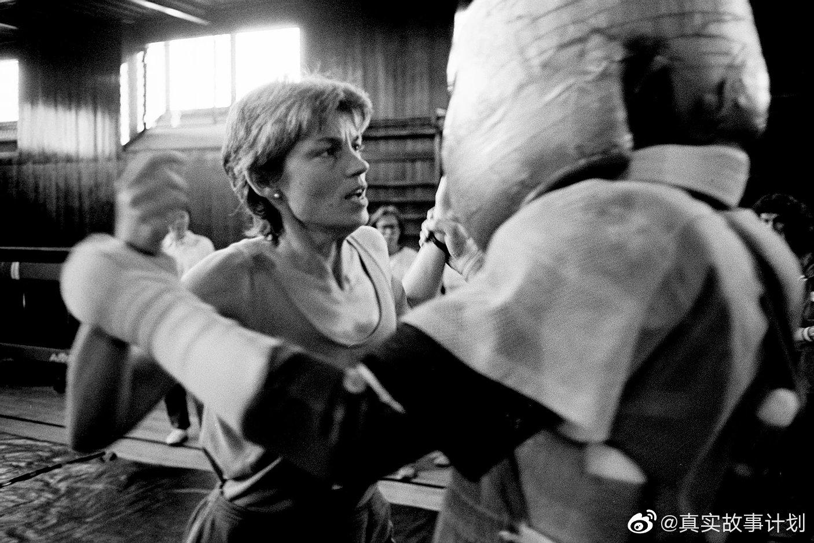

我以为美国有很长时间的反家暴历史，竟然也不到30年，之前社会对这个现象视而不见。#国际消除对妇女暴力日#
@真实故事计划:
#人间真实#
摄影师多娜·费拉多在1982年拍摄下了一张改变了许多受家暴女性人生的照片：《门扉之后》（下图1）。
当时她在纽约拍摄富人的时尚生活，认识了本特和伊丽莎白夫妇。某天夜里，多娜忽然收到伊丽莎白的求助电话，便急忙驱车前往他们的别墅。刚走进大厅，门扉之后便传来了伊丽莎白凄厉的尖叫，多娜抓起相机赶到洗手间，看到本特正抬手向伊丽莎白打去。“我当时想，如果我拍照的话，他们就会停下来”，多娜说，于是她闭着眼摁下了快门。然而，本特并没有因此停下来。
事后，这组照片的发布之路也非常崎岖坎坷。“在那个时期，新闻上并没有任何关于家庭暴力的报道。对我来说，发布这组报道、打破媒体的壁垒非常困难。没人会发表它们。”多娜说。
这激起了多娜的斗志，她决定做一本书，向世人展示家庭暴力的恐怖。于是，1991年《与敌人共眠》这本摄影书问世，这部作品记录了一系列有关家暴的场景：家、医院、警察局、避难所……在获得了诸多大奖后，多娜又成立了一个名叫“家庭暴力意识”的非营利性组织，并于2014年发起了“不可打败的我”（I Am Unbeatable）运动，记录了离开虐待者的女性们，以此来激励人们远离施暴者，积极向社会寻求帮助。#国际消除对妇女暴力日#
丨多娜·费拉多《与敌人共眠》（1991）
摄影师多娜·费拉多在1982年拍摄下了一张改变了许多受家暴女性人生的照片：《门扉之后》（下图1）。
当时她在纽约拍摄富人的时尚生活，认识了本特和伊丽莎白夫妇。某天夜里，多娜忽然收到伊丽莎白的求助电话，便急忙驱车前往他们的别墅。刚走进大厅，门扉之后便传来了伊丽莎白凄厉的尖叫，多娜抓起相机赶到洗手间，看到本特正抬手向伊丽莎白打去。“我当时想，如果我拍照的话，他们就会停下来”，多娜说，于是她闭着眼摁下了快门。然而，本特并没有因此停下来。
事后，这组照片的发布之路也非常崎岖坎坷。“在那个时期，新闻上并没有任何关于家庭暴力的报道。对我来说，发布这组报道、打破媒体的壁垒非常困难。没人会发表它们。”多娜说。
这激起了多娜的斗志，她决定做一本书，向世人展示家庭暴力的恐怖。于是，1991年《与敌人共眠》这本摄影书问世，这部作品记录了一系列有关家暴的场景：家、医院、警察局、避难所……在获得了诸多大奖后，多娜又成立了一个名叫“家庭暴力意识”的非营利性组织，并于2014年发起了“不可打败的我”（I Am Unbeatable）运动，记录了离开虐待者的女性们，以此来激励人们远离施暴者，积极向社会寻求帮助。#国际消除对妇女暴力日#
丨多娜·费拉多《与敌人共眠》（1991）


- 